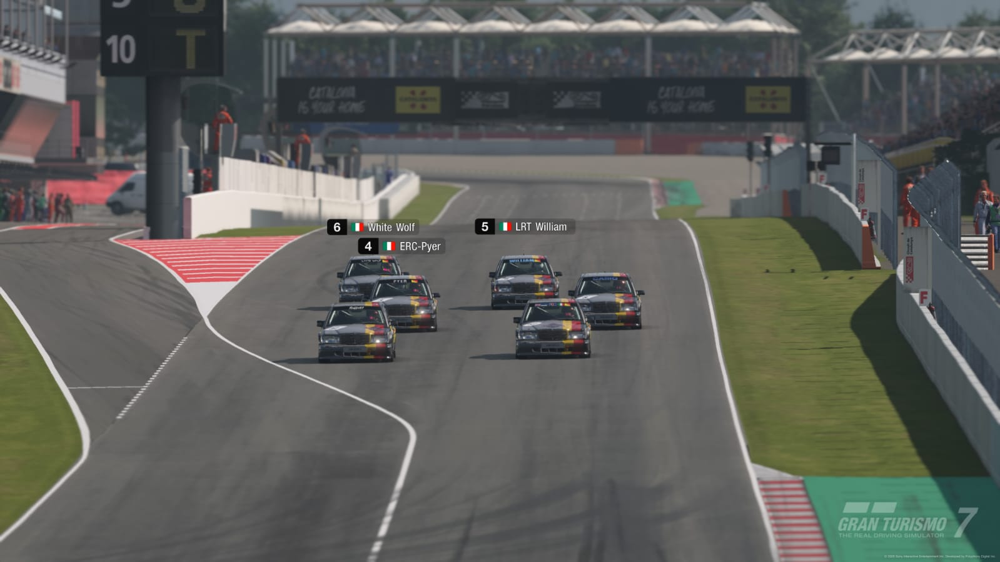
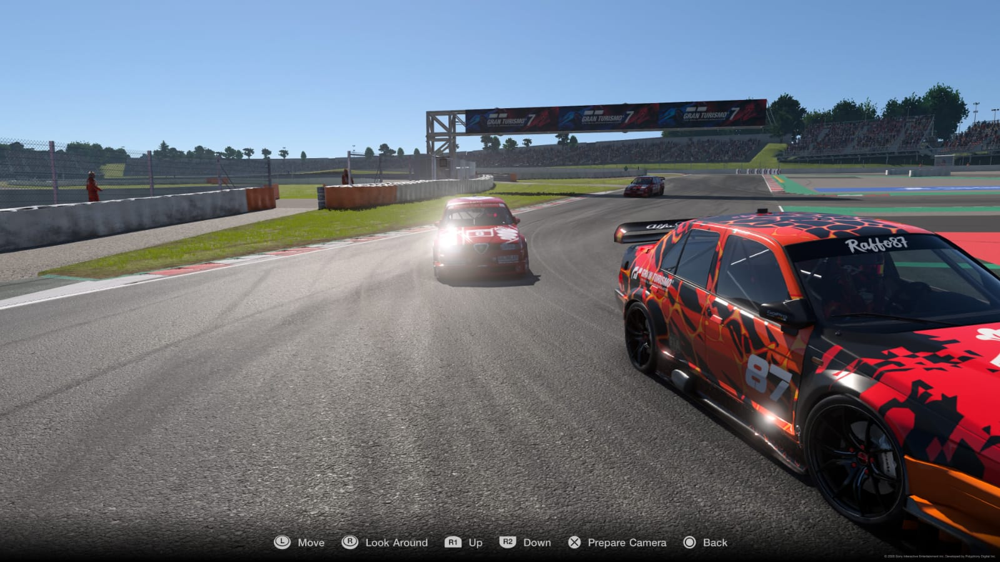
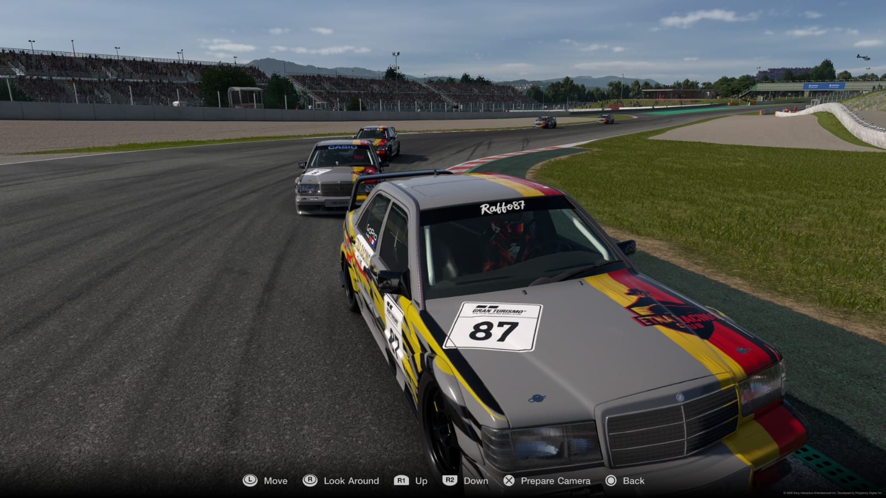
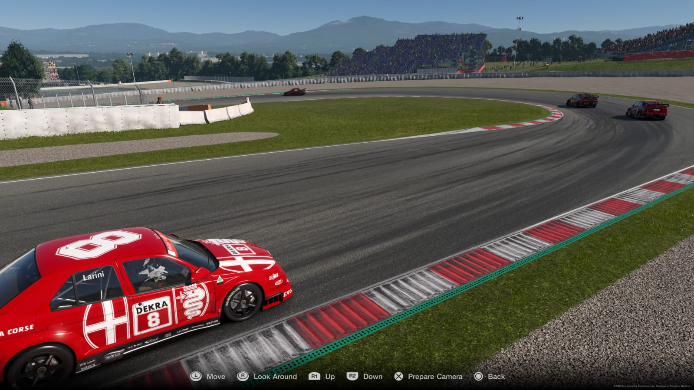
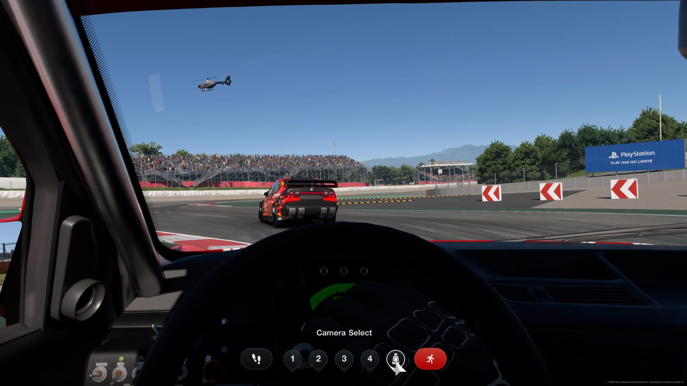
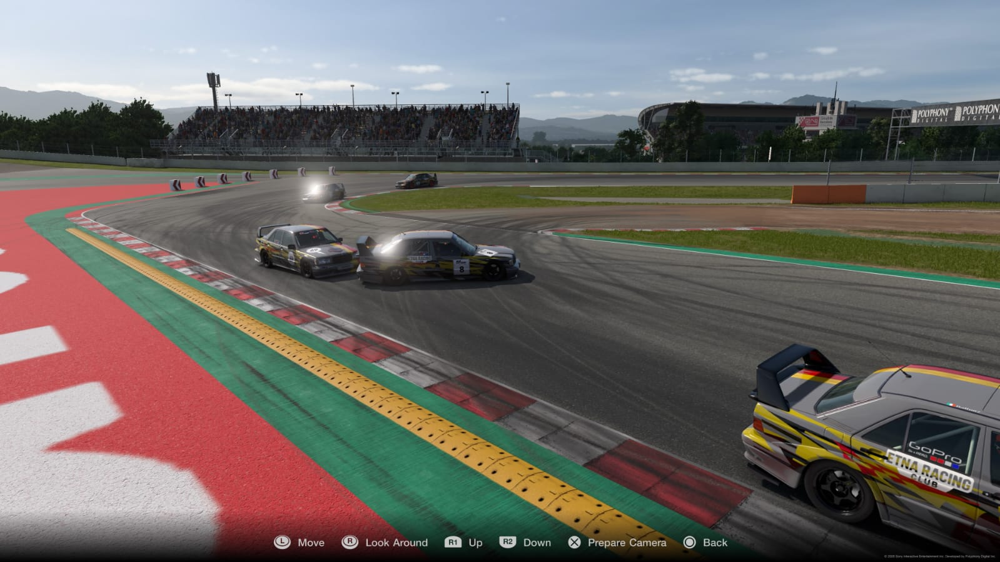
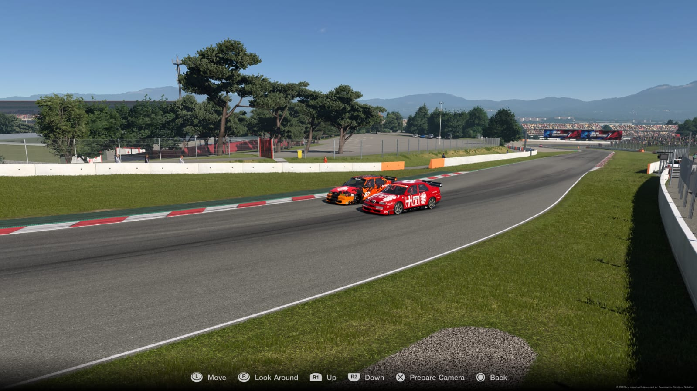
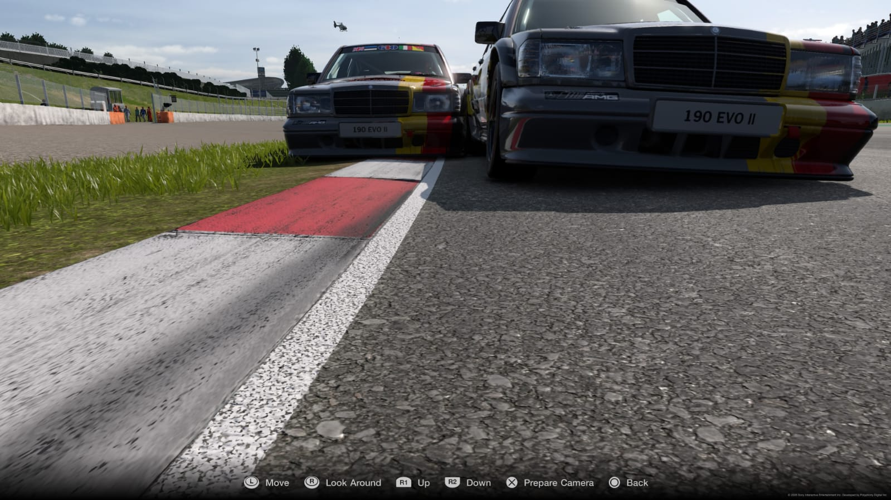
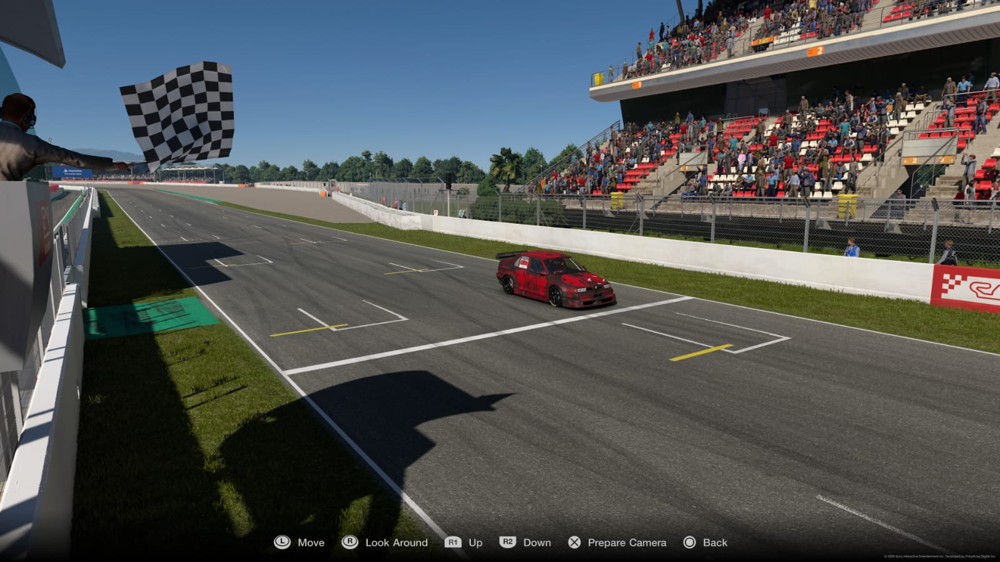
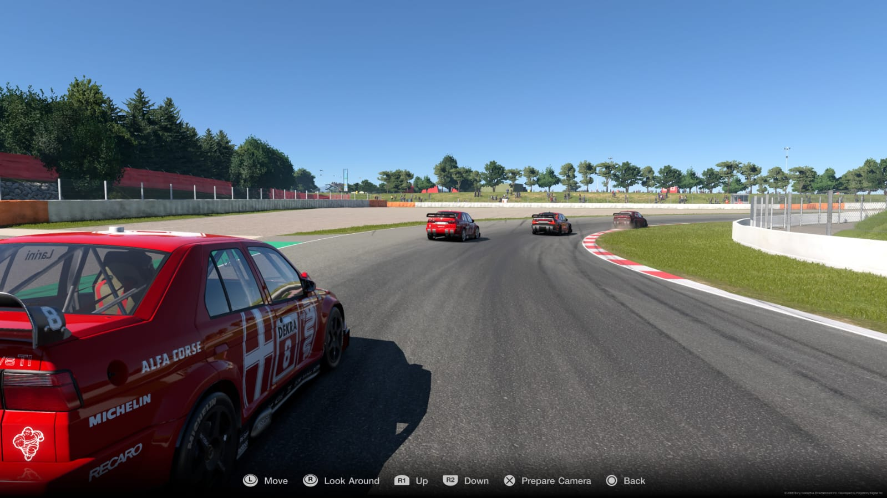

Da poco concluso il Trofeo Super Turismo che ha visto la netta predominanza di Giovanni (2 vittorie e 1 secondo posto), a seguire si è classificato Carmine (1 vittoria 1 secondo posto e 1 terzo) terzo Pierpaolo (1 quarto posto e 2 terzi) quarto William (1 quarto posto e 2 quinti) quinto Stefano (1 secondo e 1 quarto posto) chiude la classifica Fabio (un sesto e un ritiro)
Le gare sono state molto combattute e gli spettatori hanno seguito l’evolversi delle sfide con tifo crescente
A Trofeo concluso siamo riusciti a sentire a caldo le sensazioni di alcuni dei partecipanti
Carmine ad esempio ci ha detto che lui si è divertito molto e ha elogiato tutti per la sportività, si è comunque soffermato ad elogiare Giovanni “Re indiscusso di Spagna”, soprattutto ha fatto la differenza con l’Alfa 155 mentre lui e Pierpaolo hanno battagliato per la seconda posizione che lui è riuscito a consolidare grazie anche alle varie penalità del suo rivale, inoltre si è dispiaciuto del fatto che Stefano non è riuscito a mettere a moto la sua 155 saltando così l’ultima manches. Crede di essere stato fortunato a vincere con la Mercedes mentre con la Bmw ha avuto una bellissima lotta per 4/5 giri con Giovanni.
Pierpaolo invece è arrivato ai nostri microfoni particolarmente demotivato, sin dalla prima gara infatti ha subito capito che non aveva il passo degli altri, si è quasi girato alla fine del secondo giro e poi ha avuto problemi tecnici durante la gara, nella seconda è riuscito ad approfittare di un contatto tra Giovanni e Stefano passando in seconda posizione ma Giovanni è riuscito a rimontare e a superarlo in perfetto stile Super Turismo, nell’ultima gara ha provato in tutti i modi a togliere il secondo posto a Carmine ma non è stato molto incisivo in fase di sorpasso e ha chiuso la gara prendendo diverse penalità che lo hanno solo innervosito
Prossimo weekend ci aspetta Gara 2 del Campionato Gr3 a Lago Maggiore, si preannuncia una gara da fuochi d’artificio







